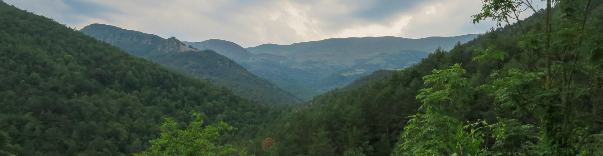

Ruta · Sant Joan
Us proposem passejar per un tram de la plana del Ter i visitar l'ermita romànica de Santa Magdalena de Perella per gaudir de les vistes de la vall del Ter, i tornar per un senderó pel mig del bosc…